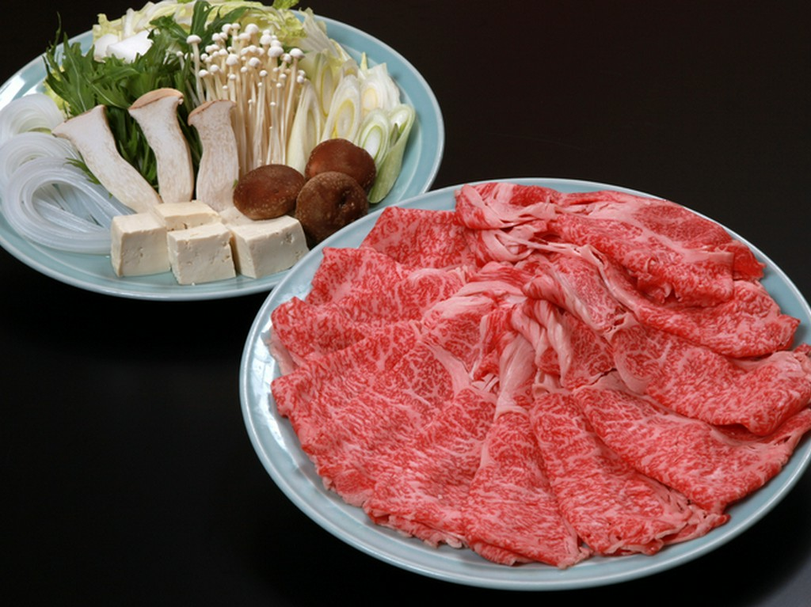
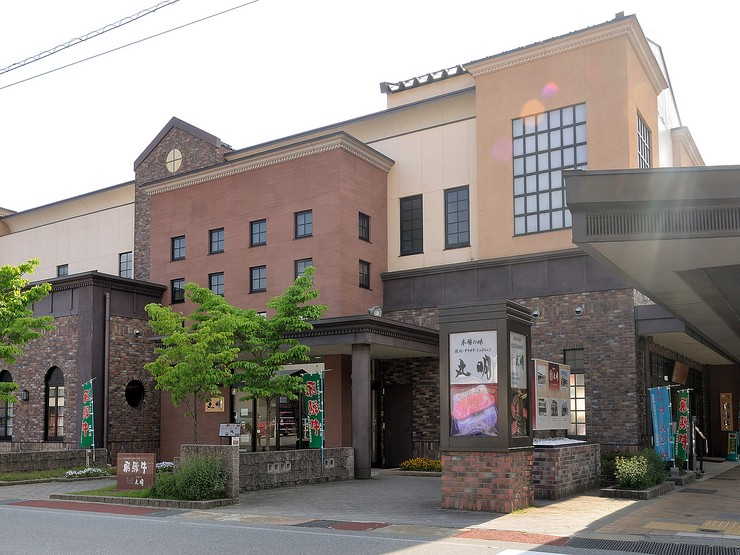
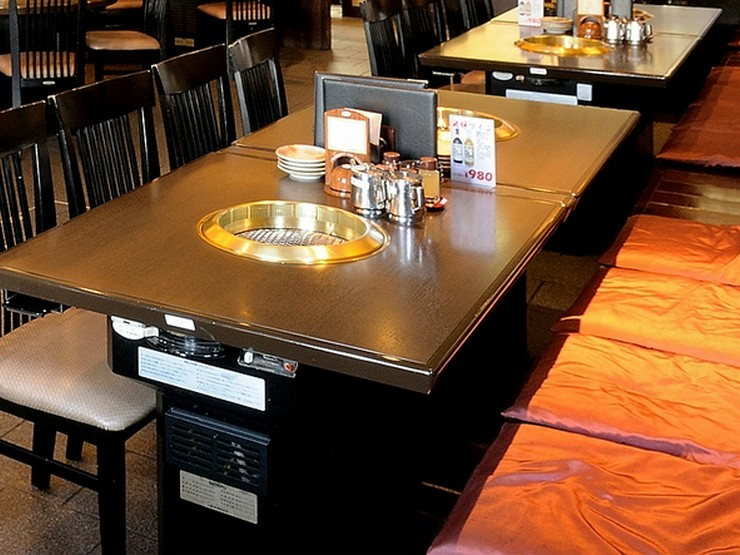
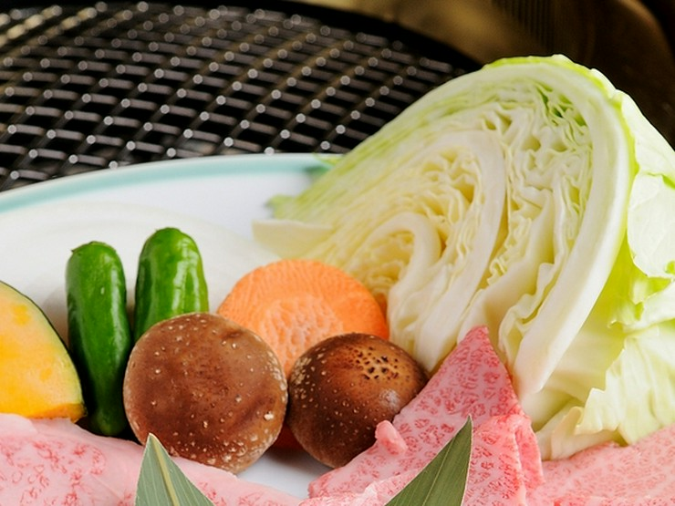
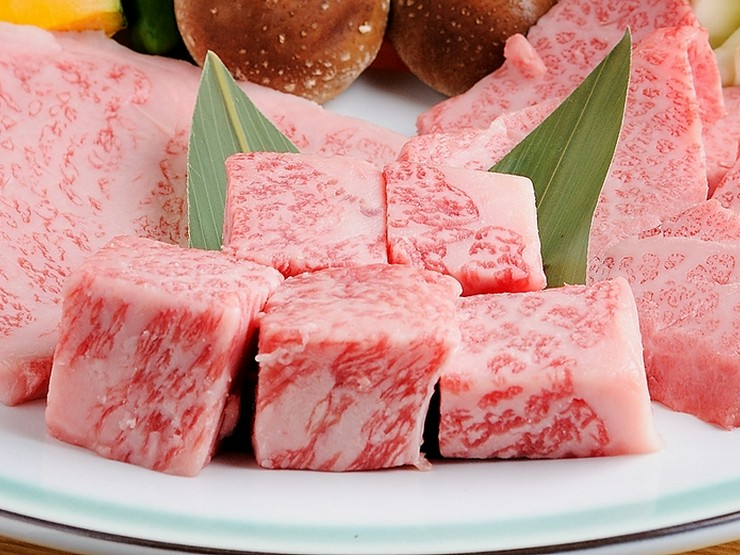
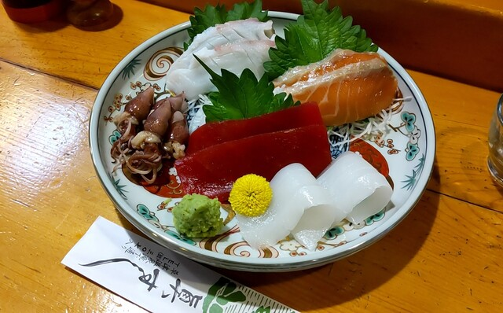
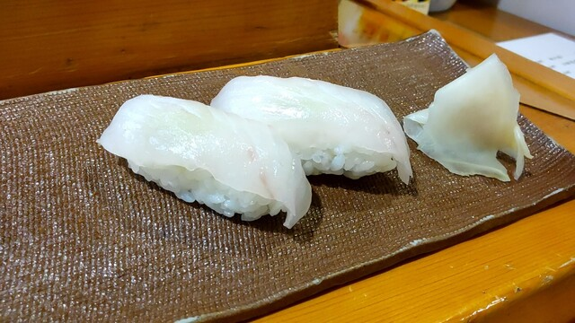
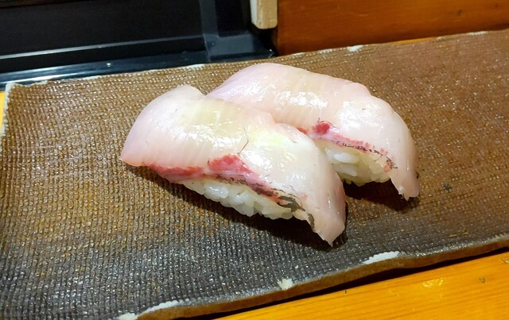
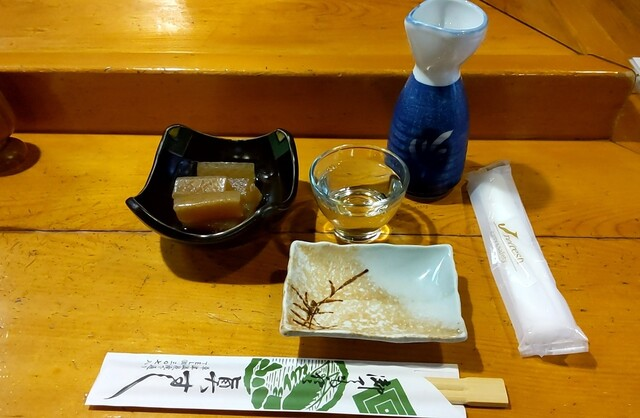

🏠 水戸➔🍱横川SA➔🛁信州健康ランド➔🚙沢渡(車中泊)➔🌲上高地➔♨️飛騨高山➔🌱安曇野➔🏔️白馬➔♨️草津➔♨️万座➔🌿軽井沢➔🏠水戸
🌀 お盆は台風シーズンです
「🌦️ 天気」タブに各日の予報を自動取得して表示しています（訪問地ごと・実際に外にいる時間帯だけを抜き出して判定）。雨だったときの差し替えプランも同じタブにまとめてあるので、前夜と当日朝に開いてください。
「🌦️ 天気」タブに各日の予報を自動取得して表示しています（訪問地ごと・実際に外にいる時間帯だけを抜き出して判定）。雨だったときの差し替えプランも同じタブにまとめてあるので、前夜と当日朝に開いてください。
🚨 出発前に電話確認すべきこと
・8/13（木）は眞すしの定休日です。お盆の臨時営業を 0279-88-3078 に要確認 → 休みならDAY4は湯畑周辺の居酒屋へ
・眞すしは現金のみ（カード・QR不可）。草津で現金を用意しておくこと
・丸明 飛騨高山店（0577-35-5858）はお盆の混雑必至。すき焼きの席を予約推奨
・8/13（木）は眞すしの定休日です。お盆の臨時営業を 0279-88-3078 に要確認 → 休みならDAY4は湯畑周辺の居酒屋へ
・眞すしは現金のみ（カード・QR不可）。草津で現金を用意しておくこと
・丸明 飛騨高山店（0577-35-5858）はお盆の混雑必至。すき焼きの席を予約推奨
⚠️ 予約状況から判明した要注意ポイント
・万座プリンスホテルは「素泊まり」プラン。夕食・朝食とも付いていません → DAY4の夕食とDAY5の朝食を別途手配
・スパホテルアルピナは朝食のみ（8/11の1泊）→ DAY2の夕食は市内で
・ホテルステラベラのみ夕朝食付き（蓼科牛フレンチ）
・万座プリンスホテルは「素泊まり」プラン。夕食・朝食とも付いていません → DAY4の夕食とDAY5の朝食を別途手配
・スパホテルアルピナは朝食のみ（8/11の1泊）→ DAY2の夕食は市内で
・ホテルステラベラのみ夕朝食付き（蓼科牛フレンチ）
8/10 DAY1水戸 ➔ 沢渡（車中泊）🚙 沢渡駐車場で車中泊
- 16:00水戸 出発（高速 約4時間）
- 18:30横川SA で夕食（フードコート・24h）※釜めしは17時まで
- 21:30信州健康ランドで入浴（塩尻北IC すぐ）
- 23:45沢渡駐車場 着・車中泊
8/11 DAY2上高地トレッキング ➔ 高山♨️ スパホテルアルピナ（朝食付）
- 06:00沢渡発 シャトルバスで上高地へ
- 06:30大正池〜田代池〜河童橋 トレッキング
- 15:00高山着・チェックイン ➔ 古い町並み散策
- 19:30丸明 飛騨高山店で すき焼き 🎯
8/12 DAY3高山朝市 ➔ 安曇野 ➔ 白馬♨️ ホテルステラベラ（2食付）
- 08:00宮川朝市 散策
- 11:00大王わさび農場（わさびソフト）
- 14:30白馬岩岳（絶景テラス・スウィング）
- 18:30宿で蓼科牛フレンチディナー 🎁予約済
8/13 DAY4志賀草津高原ルート ➔ 草津 ➔ 万座♨️ 万座プリンス（素泊まり）
- 09:00白馬 出発（一般道のみ 約4時間）
- 12:30草津温泉 湯畑・西の河原
- 15:30熱乃湯 湯もみショー（時刻固定・1日6回）
- 16:00眞すしで夕食 🎯 ※木曜定休・要確認
- 16:50草津発（17:00の夜間通行止め前に）
- 17:30万座 着・乳白色露天風呂・星空
8/14 DAY5軽井沢散策 ➔ 水戸 帰着🏠 帰宅日
- 09:30万座 出発（鬼押ハイウェー経由）
- 11:00軽井沢 散策・ショッピング・ランチ
- 14:30軽井沢 発 ➔ 18:30 水戸 帰着
🕐 運転時間の目安（高速道路／一般道 内訳）
| 区間 | 高速道路 | 一般道 | 計 |
|---|---|---|---|
| DAY1 水戸➔沢渡 | 4:00 | 1:20 | 5:20 |
| DAY2 沢渡➔高山 | — | 1:20 | 1:20 |
| DAY3 高山➔白馬 | — | 2:50 | 2:50 |
| DAY4 白馬➔万座 | — | 4:00 | 4:00 |
| DAY5 万座➔水戸 | 2:50 | 1:20 | 4:10 |
| 合計 | 6:50 | 10:50 | 17:40 |
※休憩時間は含まない実走行の目安。総走行距離は約960km
※DAY2の上高地はマイカー規制のためシャトルバス（運転なし）
※DAY4は全4時間が一般道。志賀草津高原ルートは急カーブ・標高2,000m超で疲れやすいので余裕を持って
※DAY2の上高地はマイカー規制のためシャトルバス（運転なし）
※DAY4は全4時間が一般道。志賀草津高原ルートは急カーブ・標高2,000m超で疲れやすいので余裕を持って
🌀 お盆は台風シーズン・山の天気は変わります
下の予報はこのタブを開くたびに自動で最新を取得します（気象データ：Open-Meteo）。ただし通行止め・運休の最終判断は必ず公式情報で確認してください。
🌀 気象庁 台風情報 🚧 道路交通情報
下の予報はこのタブを開くたびに自動で最新を取得します（気象データ：Open-Meteo）。ただし通行止め・運休の最終判断は必ず公式情報で確認してください。
🌀 気象庁 台風情報 🚧 道路交通情報
🌐 ウェザーニュース派の方へ
ウェザーニュースは外部サイトからのデータ読み込みを許可していないため、この画面の数値は気象庁モデル（Open-Meteo経由）を使っています。各地点のカードにある青いボタンから、その地点のウェザーニュース予報に直接飛べます。定期通知のほうではウェザーニュースの解説も読んで報告します。
🌀 WN 台風情報 🗻 WN 長野県 ♨️ WN 群馬県
ウェザーニュースは外部サイトからのデータ読み込みを許可していないため、この画面の数値は気象庁モデル（Open-Meteo経由）を使っています。各地点のカードにある青いボタンから、その地点のウェザーニュース予報に直接飛べます。定期通知のほうではウェザーニュースの解説も読んで報告します。
🌀 WN 台風情報 🗻 WN 長野県 ♨️ WN 群馬県
☁️ 最新の天気予報を取得しています…
☔ 雨だったときの差し替えプラン
🌲 DAY2 8/11 上高地 ＜判断は沢渡で 5:30＞
小雨なら決行推奨
大雨・雷なら短縮
高山の屋内代替
🌿 DAY5 8/14 軽井沢 ＜雨なら屋根のある場所へ＞
雨のときに削るもの
屋根のある選択肢
帰路の渋滞に直結します
🔗 当日チェックするリンク
※予報は Open-Meteo（気象庁GSM/MSMを含むモデル）の自動取得値です。標高が高い地点は実際の体感と差が出ることがあります。警報級の判断は必ず気象庁の情報で。
⏳天気を読み込み中…
⚠️ DAY1は行程がタイト
水戸16:00発だと沢渡着は23:45頃、翌朝5:15起床で睡眠は約5時間。
可能なら15:00発を推奨（全体が1時間前倒しになり、睡眠6時間を確保できます）。
上高地の始発バスに固執せず7:00台のバスにすれば、さらに1時間ゆっくりできます。
水戸16:00発だと沢渡着は23:45頃、翌朝5:15起床で睡眠は約5時間。
可能なら15:00発を推奨（全体が1時間前倒しになり、睡眠6時間を確保できます）。
上高地の始発バスに固執せず7:00台のバスにすれば、さらに1時間ゆっくりできます。
水戸 出発（北関東道〜上信越道）
高速：約2時間30分（横川SAまで 約190km）
ルート：北関東道 ➔ 高崎JCT ➔ 上信越道
お盆休みのドライブ旅スタート！夕方の渋滞を見越して早めの出発が吉。


峠の釜めし（益子焼の器）1 / 6
横川SA にて夕食
滞在：約60分（19:30発）
🚨 峠の釜めしは 18:30 には買えません
釜めし売店の営業は 8:00〜17:00。18:30到着だと閉まっています。
ただしフードコートとショッピングコーナーは24時間営業なので、夕食そのものは問題なく取れます。釜めしはDAY5の帰路（横川SA上り）で買うのが正解です。
釜めし売店の営業は 8:00〜17:00。18:30到着だと閉まっています。
ただしフードコートとショッピングコーナーは24時間営業なので、夕食そのものは問題なく取れます。釜めしはDAY5の帰路（横川SA上り）で買うのが正解です。
🍽️ 18:30に食べられるもの（ここが実質のディナー）
上州豚の炙り豚丼 —
レストラン（7:00〜20:00）
❌ おぎのや「峠の釜めし」
この先の信州健康ランド着は21:30と遅いため、夕食はここでしっかり取るのが安全策です。フードコートが24時間なので、到着が多少遅れても夕食難民にはなりません。
横川SA ➔ 塩尻北IC へ
高速：約2時間（上信越道 ➔ 更埴JCT ➔ 長野道 約160km）
夜間走行。長野道は交通量が減るので快適ですが、動物の飛び出しに注意。
信州健康ランドで入浴（クア・アンド・ホテル）
長野県塩尻市広丘吉田366-1 ／ 塩尻北ICから約1分
24時間営業（清掃 男湯 4:00-5:00 / 女湯 3:00-4:00）
入浴料：大人 1,980円／人（2名で3,960円）
滞在目安：60分（22:30発）
車中泊前にさっぱり。館内には食事処・仮眠室・岩盤浴もあるので、疲れが強ければここで仮眠する選択肢も。
信州健康ランド ➔ 沢渡駐車場
一般道：約1時間15分（R158経由 約50km）
R158は山岳路。夜間はカーブ・野生動物に注意
松本市街を抜けて梓川沿いを遡上。トンネルの多い道です。
沢渡（さわんど）駐車場 到着・車中泊
駐車料金：普通車 1日 700〜800円（0時で日付切替のため2日分）
市営駐車場にトイレあり。バスターミナル併設の駐車場が便利
標高約1,000m。夏でも夜は15℃前後まで下がるので薄手の寝袋推奨
翌朝の上高地シャトルバス始発（6:00頃）に備えて早めに就寝。日の出前の上高地は霧と朝もやが幻想的です。
⏳天気を読み込み中…
ℹ️ 上高地はマイカー規制
沢渡に車を置き、シャトルバスかタクシーで入ります。バス往復 3,000円／人（2名で6,000円）。始発は6:00頃、繁忙期は増便あり。
沢渡に車を置き、シャトルバスかタクシーで入ります。バス往復 3,000円／人（2名で6,000円）。始発は6:00頃、繁忙期は増便あり。
起床・身支度
朝食：前夜にコンビニで買っておいたパン・おにぎりを車内で
寒暖差があるので上着を1枚持って出発。
沢渡 ➔ 上高地（シャトルバス 約30分）
往復割引 3,000円／人
大正池で途中下車すると下りコースを歩けます
大正池で降りて、河童橋まで歩くのが王道コース。


大正池と穂高連峰1 / 8
上高地 散策（大正池〜田代池〜河童橋）
所要：約3.5時間（ゆっくり歩いて）
コース：大正池 ➔ 田代池 ➔ 梓川木道 ➔ 河童橋（約3.5km・平坦）
朝は無風で大正池の水面が鏡になる絶好の撮影タイム
早朝の澄んだ空気の中、清流・梓川と穂高連峰の絶景を歩く。この時間帯は観光客が少なく静寂を楽しめます。
河童橋周辺で昼食
🍽️ 上高地ランチ候補
五千尺ホテル ラウンジ / 上高地食堂
節約するなら…
山岳エリアなので価格は高め。こだわりがなければ持参がコスパ良。
上高地 ➔ 沢渡 ➔ 高山市内へ
バスで沢渡へ戻る（約30分）
一般道：約1時間20分（R158・安房峠道路 経由 約58km）
安房峠道路（有料トンネル）790円
安房トンネルを抜けると岐阜県。平湯温泉を経て高山市街へ下ります。


スパホテルアルピナ飛騨高山 外観1 / 4
スパホテルアルピナ飛騨高山 チェックイン
予約番号：IN1663699129（決済済 30,306円・朝食付）
チェックイン 15:00〜25:00 ／ アウト 10:00
現地払い：入湯税150円＋宿泊税200円 ×2名 = 700円
このプランは駐車場無料（通常900円/泊）
まず荷物を置いて身軽に。車中泊明けなので一度シャワーを浴びてリセットするのもおすすめ。
🏨 公式サイトで客室・屋上温泉の写真を見る
🏨 公式サイトで客室・屋上温泉の写真を見る


上三之町の町並み1 / 7
飛騨高山 古い町並み（上三之町）散策
所要：約2.5時間（ホテルから徒歩10分）
食べ歩き：飛騨牛にぎり寿司・飛騨牛コロッケ・みたらし団子・地酒
多くの店が17:00頃閉店。早めに向かうのが正解
江戸時代の情趣が残る出格子建築の町並み。夕方は人が減って写真も撮りやすくなります。
ホテル帰着・屋上天然温泉
自家源泉の屋上展望露天風呂
車中泊＆トレッキングの疲れをここでしっかり抜きましょう。





飛騨牛すき焼き 2人前（野菜付）1 / 5
丸明 飛騨高山店で すき焼き 🎯決定
高山市天満町6-8 高山駅から徒歩約5分
11:00〜21:00（L.O. 20:30）／元日のみ休
0577-35-5858 お盆は混雑必至・予約推奨
宿は朝食のみのため、夕食はここで確定
🍲 すき焼きメニュー（すべて2人前240g・野菜付）
飛騨牛すき焼き —
飛騨牛赤身すき焼き —
A-5飛騨牛すき焼き —
追加肉（100g）
240gは2人でちょうど良い量。物足りなければ追加肉で調整を。
🏪 公式サイトで店舗情報を見る
🏪 公式サイトで店舗情報を見る
⏳天気を読み込み中…
ℹ️ この日は食事の心配なし
朝食はアルピナ付き、夕食はステラベラの蓼科牛メインのカジュアル・フレンチが付いています。手配が必要なのは昼食のみ。
朝食はアルピナ付き、夕食はステラベラの蓼科牛メインのカジュアル・フレンチが付いています。手配が必要なのは昼食のみ。
ホテルにて朝食（プランに込み）🎁
飛騨の郷土料理が並ぶ朝食バイキング。しっかり食べて出発。


宮川朝市の露店1 / 6
飛騨高山 朝市（宮川朝市・陣屋前朝市）
開催：7:00〜12:00頃 ／ 滞在 約1時間
みたらし団子、飛騨牛串焼き、旬の果物、赤かぶ漬け
宮川沿いの名物朝市。地元のおばあちゃんとの会話も楽しみのひとつ。お土産の下見にも最適。
高山 出発 ➔ 安曇野へ
一般道：約1時間50分（R158・安房峠道路 経由 約90km）
安房峠道路 790円
昨日と同じ道を逆走。北アルプスの絶景ドライブを再び。


蓼川と三連水車小屋1 / 6
大王わさび農場（散策・わさびソフト）
入場無料／わさびソフト 約400円
滞在：約1時間
日本最大級のわさび田。黒澤明監督の映画に登場した三連水車小屋と清流・蓼川の風景は必見。


信州そば 天ざる1 / 4
信州手打ち蕎麦ランチ（安曇野 or 白馬）
🍽️ ランチ候補
安曇野で食べる
白馬まで走ってから食べる
北アルプスの伏流水で締めた蕎麦は格別。
安曇野 ➔ 白馬へ
一般道：約1時間（R147・R148 約50km）
仁科三湖を横目に北上。青木湖あたりの車窓が美しい区間。


白馬三山（テラスからの眺め）1 / 6
白馬岩岳マウンテンリゾート
リゾート入場券 2,900円／人（2名 5,800円）ゴンドラ往復＋南ペアリフト往復込み
ゴンドラ「ノア」8:30〜16:20 下り最終 16:50（乗り遅れ厳禁）
山麓に無料駐車場あり。ホテルまで車で約20分
⏱️ 2時間半のモデルプラン
14:30 山麓駅でチケット購入 ➔ ゴンドラ乗車
14:50 HAKUBA MOUNTAIN HARBOR
15:30 ヤッホー！スウィング —
16:00 ねずこの森 or 山頂散策
16:20〜16:40 下りゴンドラ ➔ ホテルへ
歩き回らずに絶景だけ楽しめるので、上高地トレッキング翌々日の足にもやさしいプラン。予算が厳しければここをカットして5,800円節約も可能（白馬三山は道路沿いや宿からでも見えます）。
🏔️ 公式サイトで営業状況を確認する
🏔️ 公式サイトで営業状況を確認する


ホテル ステラベラ 外観1 / 4
ホテル ステラベラ チェックイン
予約番号：IC1663796507（決済済 54,602円・夕朝食付）
チェックイン 15:00〜18:00（締切が早いので遅れ厳禁）
18:30〜 蓼科牛メイン×信州産食材のカジュアル・フレンチ 🎁
露天風呂は貸切制。到着時に時間を予約しておくとスムーズ
現地払い：宿泊税 400円×2名 = 800円（入湯税は料金込み）
この旅で一番のごちそう。ゆっくり味わいましょう。
🏨 公式サイトで客室・貸切露天風呂の写真を見る
🏨 公式サイトで客室・貸切露天風呂の写真を見る
⏳天気を読み込み中…
⚠️ 最重要：万座プリンスは「素泊まり」
予約プランは【バリューレート】室料のみ・1泊食事無（23,452円決済済）。夕食も朝食も付いていません。
万座温泉は山上の温泉地で外食店がほぼ無いため、以下のどちらかを選んでください。
予約プランは【バリューレート】室料のみ・1泊食事無（23,452円決済済）。夕食も朝食も付いていません。
万座温泉は山上の温泉地で外食店がほぼ無いため、以下のどちらかを選んでください。
🚨 最重要：草津は「17:00までに」出発してください
草津 ➔ 万座は国道292号の火山規制区間を通ります。この区間は夜間通行止め（17:00〜翌8:00）。
当初の「17:00 夕食 ➔ 18:00 草津発」では規制に引っかかって通れません。夕食を前倒しし、16:50までに草津を出る組み立てに変更しています。
※規制時間は火山活動レベルで変わります。当日朝に必ず最新の規制情報を確認してください。
草津 ➔ 万座は国道292号の火山規制区間を通ります。この区間は夜間通行止め（17:00〜翌8:00）。
当初の「17:00 夕食 ➔ 18:00 草津発」では規制に引っかかって通れません。夕食を前倒しし、16:50までに草津を出る組み立てに変更しています。
※規制時間は火山活動レベルで変わります。当日朝に必ず最新の規制情報を確認してください。
🚗 この日は全行程4時間が一般道
志賀草津高原ルートは標高2,000m超・急カーブ連続。白馬9:00発で草津12:30着の想定です。
志賀草津高原ルートは標高2,000m超・急カーブ連続。白馬9:00発で草津12:30着の想定です。
🎭 湯もみショーは1日6回・時刻が決まっています
午前 9:30／10:00／10:30 午後 15:30／16:00／16:30（各回約20分・チケットは30分前から販売）
草津着が12:30なので午前の回は終わっています。夕食の前倒しと両立するのは15:30の回です。
午前 9:30／10:00／10:30 午後 15:30／16:00／16:30（各回約20分・チケットは30分前から販売）
草津着が12:30なので午前の回は終わっています。夕食の前倒しと両立するのは15:30の回です。
ステラベラにて朝食（プランに込み）🎁
長距離運転の日なのでしっかり補給を。
白馬 出発（志賀草津高原ルート経由）
一般道：約3時間20分（約130km・全線一般道）
渋峠（標高2,172m）は日本国道最高地点
山岳路に入る前に給油を済ませておくこと
白根山の火山景観と雲海の絶景ロード。休憩を挟みつつ余裕を持って。


湯畑（全景）1 / 8
草津温泉 到着・湯畑周辺散策
滞在：約4.3時間（12:30〜16:50）※17:00の夜間通行止めに間に合わせる
熱乃湯「湯もみショー」 15:30の回（約20分）約700円／人（2名で1,400円）
チケットは公演30分前から販売。15:00には熱乃湯へ
食べ歩き：温泉まんじゅう、揚げまんじゅう、温泉たまご
毎分4,000L以上湧く湯畑を中心に湯けむり漂う温泉街を散策。西の河原公園まで足を延ばすのもおすすめ。


五目釜めし（いいやま亭の人気メニュー）1 / 3
草津でランチ




眞すし 刺身の盛り合わせ1 / 4
眞すし（まことすし）で夕食 🎯決定
🚨 最重要：8/13（木）は眞すしの定休日です
食べログの店舗情報では木曜定休。お盆期間で臨時営業の可能性はありますが、出発前に必ず 0279-88-3078 へ電話確認を。休みの場合は下の代替案へ切り替えてください。
食べログの店舗情報では木曜定休。お盆期間で臨時営業の可能性はありますが、出発前に必ず 0279-88-3078 へ電話確認を。休みの場合は下の代替案へ切り替えてください。
吾妻郡草津町草津340 大滝乃湯の近く
11:00〜14:00／16:00〜20:00 木曜定休
0279-88-3078 駐車場あり
現金のみ（クレジットカード・QR決済とも不可）
予算 2,000〜3,500円／人（2名 約4,000〜7,000円）
万座は素泊まりのため夕食はここで確定。16:00開店と同時に入店し、16:45には出ること
元は魚屋さんが営む草津温泉唯一の寿司店。山の中ながらネタが良いと評判です。翌朝は軽井沢散策なので、脂の重い夕食を避けられるのも利点。現金を用意しておいてください。
⏰ 16:00開店直後に入店 ➔ 16:45退店 ➔ 16:50草津発。夜間通行止め（17:00〜）に間に合わせるため、ここは急ぎ足になります。ゆっくり飲みたい場合は後述の「万座で夕食」案に切り替えてください。
⏰ 16:00開店直後に入店 ➔ 16:45退店 ➔ 16:50草津発。夜間通行止め（17:00〜）に間に合わせるため、ここは急ぎ足になります。ゆっくり飲みたい場合は後述の「万座で夕食」案に切り替えてください。
🔄 眞すしが休みだった場合の代替
🍽️ 予備案：万座プリンス館内で食べる ＜楽だが割高＞
レストラン しゃくなげ（ブッフェ） —
和食「松風」／中華「錦」
予算試算では眞すし（2名6,000円）で計算しています。木曜定休のため、当日が木曜の場合は湯畑周辺の和食・居酒屋へ切り替えを。
草津 ➔ 万座温泉 ※17:00の規制前に出発
一般道：約40分（国道292号・万座道路 約25km）→ 17:30着
国道292号の火山規制区間を通過します。夜間通行止め 17:00〜翌8:00
通行料の実額は当日Googleマップで確認（万座ハイウェーは北軽井沢側の有料道路で、この区間では通常使いません）
この日いちばんの時間的制約です。規制に間に合わなかった場合、万座へは北軽井沢経由の大回り（+1時間以上）になります。夕食を切り上げてでも16:50発を死守してください。


万座プリンスホテル 露天風呂「こまくさの湯」1 / 4
万座プリンスホテル チェックイン
受付番号：6210659387（決済済 23,452円・素泊まり）
本館ツインルームC 禁煙 19.2㎡
駐車場 無料（屋外190台）
現地払い：入湯税150円＋宿泊税200円 ×2名 = 700円
TEL 0279-97-1111（到着が18:00を大きく過ぎる場合は要連絡）
標高1,800mの乳白色にごり湯露天風呂。夜は空気が澄んで満天の星空が広がります。防寒着を忘れずに。
🏨 公式サイトで客室・露天風呂の写真を見る
🏨 公式サイトで客室・露天風呂の写真を見る
⏳天気を読み込み中…
⚠️ 朝食も付いていません
万座プリンスは素泊まりのため、朝食は①館内レストランで別料金、②前日に草津のコンビニで購入、のいずれか。山上でコンビニは無いので、草津で買っておくのが確実＆節約になります。
万座プリンスは素泊まりのため、朝食は①館内レストランで別料金、②前日に草津のコンビニで購入、のいずれか。山上でコンビニは無いので、草津で買っておくのが確実＆節約になります。
朝食（各自手配）
前夜に草津で購入した軽食 → 約1,500円で済む
館内レストランを利用する場合は別料金（要確認）
出発前にもう一度、朝の露天風呂に入るのがおすすめ。
万座 出発（鬼押ハイウェー経由）
一般道・有料道路：約1時間20分（約50km）
鬼押ハイウェー 約830円
浅間山の溶岩景観（鬼押出し園）が車窓に
最終日は高原リゾートへ下っていくドライブ。


旧軽井沢銀座 通り1 / 7
軽井沢 散策・ランチ・お土産
滞在：約3.5時間（11:00〜14:30）
駐車場が最大の難関。旧軽井沢は町営・民間とも1日500〜1,000円。お盆は午前中で満車になるため11:00までに入れるのが理想
旧軽銀座〜雲場池〜聖パウロ教会は徒歩圏。車は1か所に停めて歩くのが正解
⏱️ 3時間半のモデルプラン（徒歩中心）
💡 効率重視なら
ハルニレテラスは中軽井沢（旧軽から車15分）で、旧軽エリアとは逆方向。時間が押したらプリンスショッピングプラザ一本に絞るのが安全です。ICへもそのまま向かえます。
ハルニレテラスは中軽井沢（旧軽から車15分）で、旧軽エリアとは逆方向。時間が押したらプリンスショッピングプラザ一本に絞るのが安全です。ICへもそのまま向かえます。
最終日はお土産の総仕上げ。お盆最終日は道路が混むので14:30出発を厳守。
軽井沢 出発 ➔ 18:30 水戸 帰着
高速：約2時間50分（碓氷軽井沢IC〜上信越道〜北関東道 約230km）
お盆Uターンラッシュ。渋滞を見込んで+1時間の余裕を
4泊5日、約960kmのドライブ旅お疲れさまでした✨